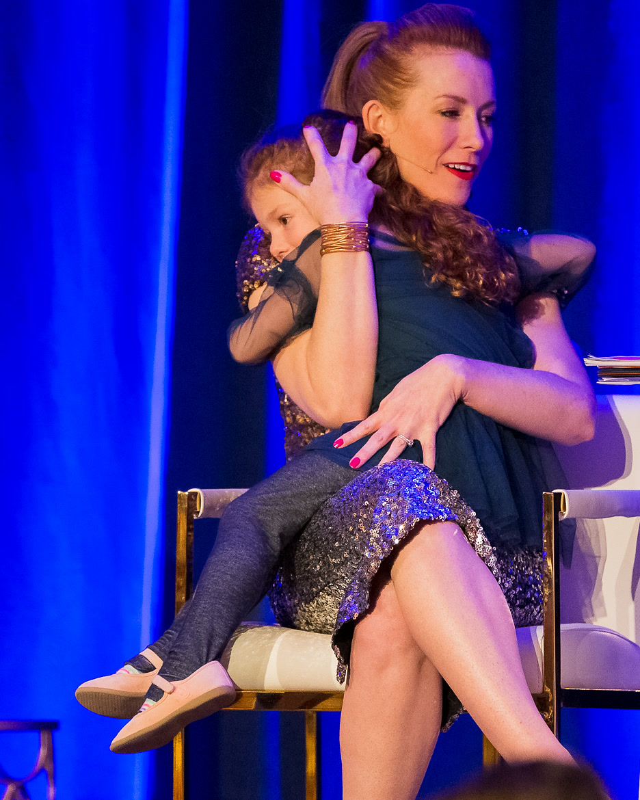

I had everything I was supposed to want… but still felt empty inside.
I was an overachieving 29-year-old with a full bank account, four properties and a successful career as the number one sales rep in the Western United States for a Fortune 500 company… I was the very definition of success, and while I should have felt fulfilled, I felt numb, empty and uninspired.
My primary pattern
Not feeling good enough had me believe the lie that the more I did and the more I produced, the more success and happiness I would find… that was my epic downfall.
And at 29, I hit my quarter-life crisis.
My quarter-life crisis happened at the happiest place on earth.
I was sitting at Disney watching The Lion King, looking at the African savanna on the screen, and I realized that if I had all the time and all the money in the world, I'd be out there exploring it. Then it hit me that I did have the money and I could make the time, but I still wasn't doing it. Something was running my life, and it wasn't me.
That day I decided to quit. I sold off three of the properties, and six months later I left for two years of traveling, exploring and working on myself harder than I'd ever worked at anything.
I invested $150,000 in my own growth, finished more than 53 courses and studied with masters around the world.
Every course, coach and master helped me understand myself a little more, but none of it changed what was underneath. I could explain my patterns in detail, and I was still living them every day. It wasn't until I started working with energy that things began to shift, because when you work with the energy of a pattern, you reach its root, and when the root changes, everything else changes with it.
My first company was built inside the system I was actively trying to leave.
People began seeking me for coaching, guidance and facilitation, and in 2011 my first company was established. Eventually it grew to three-quarters of a million in revenue; I had six employees, I was certifying 35 coaches in my proven methodology, and hundreds of people had completed my flagship program. But it was all built the only way I knew how to survive back then: pushing, overachieving, doing it all myself and juggling more balls than most.
One misalignment, and it all came to an end. That's when I finally got to the root of the pattern, and The Beyond Human Method was rebuilt on everything that evolution taught me. It's founded on ease and expansion, divine feminine intuition and a new paradigm of how we succeed.

I raise my daughter like we're on vacation.
We live in the Rocky Mountains of Colorado. Some days that means an afternoon bath at 2pm, and some days it means snowboarding at noon, and the business keeps growing anyway, because it was built on alignment instead of force.
Using these principles has allowed me to make money, increase my impact and still be the kind of mom I want to be. Two years ago, I made the decision to start homeschooling my daughter, and I have that flexibility and that opportunity because of the principles, the alignment and the foundation I coach from.
So this isn't a methodology I teach; it's a methodology I live, and through all of my trainings and teachings, you'll hear stories of how I've already applied it in my life.
The mission
A person who knows her own power can't be kept small.
The systems we grew up inside needed us logical, manageable and just evolved enough to keep complying. My mission is to help as many people as possible step out of that story and live as what they actually are, infinite beings having a human experience, and to make that the foundation of living for the next evolution of humanity.
I wasn't born with a silver spoon in my mouth.
I grew up in poverty, and I faced more trauma than most people could handle. There was sexual, physical and mental abuse when I was a kid. I was almost raped three times before I graduated college, and for years I slept with a knife under my pillow. I've had an abortion, and I've been through a divorce.
So if you've been through it, there's a good chance I've been through it too.
I know what it's like to carry all of that and still show up smiling and keep going for everyone else, and I know what becomes possible when it clears at the root… anything you want.
I'm committed to you
I've got your back, and nobody will be a bigger cheerleader for you than me.
You've been everyone else's biggest fan for a long time. Now it's your turn to have one.
What I love about Tamara's coaching style is it's intense. She gets right to the core, she does it with a huge smile on her face and doesn't back down. She's also very sensitive to each individual personality and how they receive things.
Tamara is very unafraid to ask you to dig deeper. She challenges you to reveal the things that are holding you back without bullshitting yourself. She makes you do the work, and you WANT to do the work.
It's a very easy, playful, fun, straight up, no bullshit facilitation style, and there's a real authenticity there, so it moves with velocity.